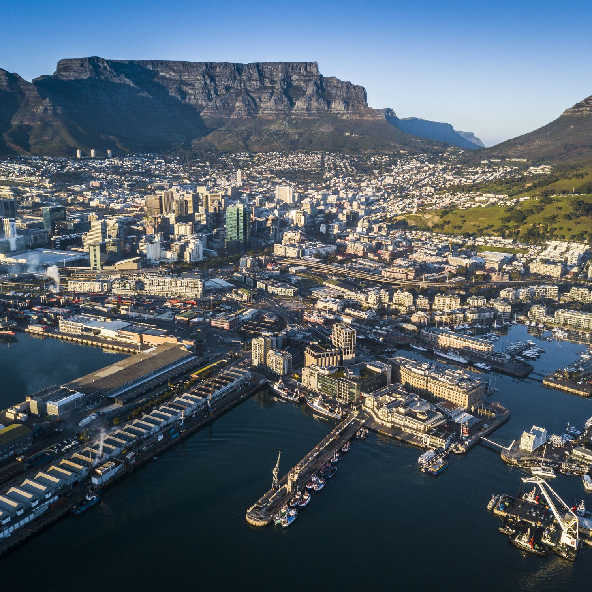

Hello Everyone!
My name is Jessica
I was raised in Cape Town, South Africa for 21 years before moving to America :)

Here you can find 12 best things to do in Cape Town!
Africa is HUGE. Below I have listed a few countries
- Egypt
- Kenya
- Zimbabwe
- Morocco
- Uganda
A few languages that we speak in Africa are:
- English
- Afrikaans
- Xhosa
- Swahili
- Zulu